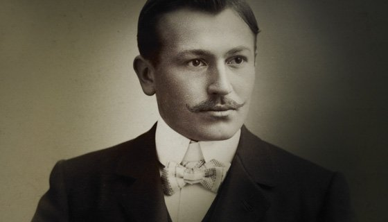

История ROLEX началась, когда Ганс Вильдсдорф изобрел первые водонепроницаемые наручные часы - Oyster - и создал линию
моделей, ставших эталоном часового мастерства. Узнайте о том, какой невероятный путь проделали часы ROLEX на запястьях
первооткрывателей, деятелей исскусства, спортсменов и новаторов, устремляясь на самые высокие вершины и в бездонные океанские
глубины.

Ганс Вильдсдорф твердо верил в безграничные способности человека изобретать и достигать совершенства.
Сегодня, по прошествии уже более века с момента создания часовой марки, убеждения и дух её создателя
как никогда определяют как процесс производства часов, так и инициативы Rolex по всему миру.
В начале прошлого века Ганс хотел добиться признания на часовом рынке на тот момент еще никому
не известной часовой марки - Rolex. Это оригинальное название, придуманное в 1908 году, за несколько
десятилетий стало одной из самых престижных марок в мире. «Поначалу это казалось невозможным», – так
напишет в своих мемуарах Ганс Вильсдорф об основании своего предприятия.
Около века назад Ганс Вильсдорф создал самые точные и самые надежные наручные часы в мире.
Благодаря бескомпромиссному подходу часовая марка и сегодня продолжает выпускать авангардные
в техническом отношении часы и работать над их совершенствованием.
Появление коллекции Oyster Perpetual обязано успеху первой модели Oyster, запатентованной и
выпущенной Rolex в 1926 году. Oyster, первые в мире водонепроницаемые часы, открыли эпоху
современных наручных часов. По мере развития коллекции в них нашли применение и другие
многочисленные инновации, такие, например, как система автоматического подзавода,
осуществляемого с помощью ротора Perpetual (1931 год). Они определили своеобразие коллекции
и способствовали формированию репутации совершенства, которой пользуются часы Rolex и которая
объясняется, в частности, их надежностью и хронометрической точностью.
После того как, к началу 1940-х годов, окончательно сложился образ часов Oyster,
на их основе постепенно разрабатывается целая коллекция часов, наделяемых новыми
функциями и вбирающих в себя новаторские технологии. Ключевые особенности модели-архетипа
унаследовали все часы коллекции, которые легко узнать по общей визуальной эстетике.
Сегодня коллекция Oyster Perpetual насчитывает около четырнадцати гамм. Они подразделяются
на Классические часы, такие как Datejust, Day‑Date и Sky‑Dweller, и Профессиональные, рассчитанные
на применение в специфических областях, такие как Explorer, Submariner и GMT‑Master II.
Rolex – независимая мануфактура с вертикальной организацией, располагающая большим количеством запатентованных
технологий. Часовые мастера, инженеры, дизайнеры и другие специалисты здесь тесно сотрудничают в процессе
разработки и производства часов. В основу корпоративной культуры Rolex заложены человеческие ценности,
а именно – профессиональные мастерство, опыт и личные качества сотрудников, работающих в различных областях.
В стенах Rolex объединилось большое количество разных профессий. Все без исключения сотрудницы и сотрудники
компании являются высококвалифицированными специалистами в своей области. Благодаря этому марка самостоятельно
изготавливает все основные детали своих моделей – от выплавки золотых сплавов и металлообработки до декоративной отделки,
закрепки драгоценных камней и завершающей сборки механизма, корпуса, циферблата и браслета. Применение эксклюзивного оборудования
позволяет ей задавать все более высокие стандарты качества. Также Rolex обеспечивает всеобъемлющий сервис своих часов повсюду в
мире через развитую высококачественную сеть послепродажного обслуживания.